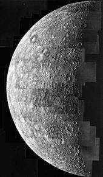

Mercurio è il pianeta più interno del Sistema solare e il più vicino al Sole. È il più piccolo e la sua orbita è anche la più eccentrica, ovvero la meno circolare, degli otto pianeti. Mercurio orbita in senso diretto (in senso antiorario, come tutti gli altri pianeti del Sistema solare ) a una distanza media di 0,3871 UA dal Sole con un periodo siderale di 87,969 giorni terrestri. Mercurio è anche in risonanza orbitale-rotazionale: completa tre rotazioni intorno al proprio asse ogni due orbite attorno al Sole.
Foto di Mercurio scattata dalla sonda Messenger
L'eccentricità orbitale è abbastanza elevata e vale 0,205, ben 15 volte quella della Terra. La superficie di Mercurio sperimenta la maggiore escursione termica tra tutti i pianeti, con temperature che nelle regioni equatoriali vanno da 100 K (-173 °C) della notte a 700 K (427°C) del dì; le regioni polari invece sono costantemente inferiori a 180 K (-93°C). Ciò è dovuto all'assenza dell'atmosfera che, se presente, svolgerebbe un ruolo nella ridistribuzione del calore. La superficie fortemente craterizzata indica che Mercurio è geologicamente inattivo da miliardi di anni.
Migliaia di immagini dalla fotocamera grandangolare della NASA MESSENGER di Mercurio con falsi colori
Mercurio fu visitato per la prima volta nel 1974 dalla sonda statunitense Mariner 10 che teletrasmise a terra fotografie registrate nel corso di tre successivi sorvoli.

Mercurio, il 28 marzo 1974
Il moto di rotazione mercuriano è molto lento: esso impiega 58,6 giorni per compiere un giro su se stesso, e completa quindi tre rotazioni ogni due rivoluzioni, in risonanza orbitale 3:2, questo fa sì che la durata del giorno solare (176 giorni) sia il doppio della durata dell'anno (88 giorni); Mercurio è l'unico pianeta del Sistema solare sul quale la durata del giorno è maggiore del periodo di rivoluzione.